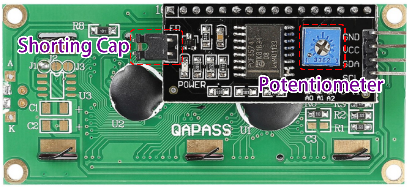
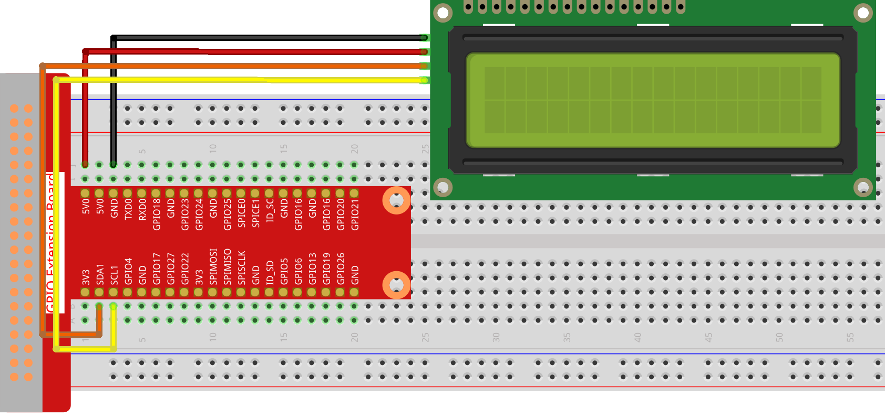

Note
Bonjour, bienvenue dans la communauté SunFounder des passionnés de Raspberry Pi, Arduino et ESP32 sur Facebook ! Plongez-vous plus profondément dans l’univers du Raspberry Pi, de l’Arduino et de l’ESP32 avec d’autres passionnés.
Pourquoi nous rejoindre ?
Support d’experts : Résolvez les problèmes après-vente et les défis techniques grâce à l’aide de notre communauté et de notre équipe.
Apprendre et partager : Échangez des astuces et des tutoriels pour perfectionner vos compétences.
Aperçus exclusifs : Profitez d’un accès anticipé aux nouvelles annonces de produits et aux aperçus.
Remises spéciales : Bénéficiez de réductions exclusives sur nos derniers produits.
Promotions festives et cadeaux : Participez à des tirages au sort et à des promotions pendant les fêtes.
üëâ Pr√™t √† explorer et √† cr√©er avec nous ? Cliquez sur [Ici] et rejoignez-nous d√®s aujourd‚Äôhui !
1.1.7 LCD1602 I2C
Introduction
Le LCD1602 est un écran à cristaux liquides de type caractère, capable d’afficher 32 caractères (16*2) simultanément.
Composants

Principe
LCD1602 I2C

GND : Masse
VCC : Alimentation électrique, 5V.
SDA : Ligne de données série. Connecter au VCC via une résistance de tirage.
SCL : Ligne d’horloge série. Connecter au VCC via une résistance de tirage.
Comme vous le savez, bien que les écrans LCD et d’autres types d’affichages enrichissent considérablement l’interaction homme-machine, ils présentent un inconvénient commun : lorsqu’ils sont connectés à un contrôleur, ils occupent de nombreux ports d’E/S, limitant ainsi d’autres fonctionnalités.
C’est pourquoi le LCD1602 avec un module I2C a été développé pour résoudre ce problème. Le module I2C intègre une puce PCF8574 qui convertit les données série I2C en données parallèles pour l’affichage sur le LCD.
Adresse I2C
L’adresse par défaut est généralement 0x27, dans quelques cas, elle peut être 0x3F.
Prenons l’exemple de l’adresse par défaut 0x27, l’adresse de l’appareil peut être modifiée en court-circuitant les broches A0/A1/A2 ; à l’état par défaut, A0/A1/A2 sont à 1, et si le pont est réalisé, A0/A1/A2 sont à 0.

Rétroéclairage/Contraste
Le rétroéclairage peut être activé par un cavalier. Retirez le cavalier pour désactiver le rétroéclairage. Le potentiomètre bleu à l’arrière est utilisé pour ajuster le contraste (le rapport de luminosité entre le blanc le plus brillant et le noir le plus sombre).
Cavalier de court-circuit : Le rétroéclairage peut être activé grâce à ce cavalier. Retirez-le pour désactiver le rétroéclairage.
Potentiomètre : Utilisé pour ajuster le contraste (la clarté du texte affiché), qui augmente dans le sens horaire et diminue dans le sens antihoraire.
Schéma de câblage
T-Board Name |
physical |
SDA1 |
Pin 3 |
SCL1 |
Pin 5 |

Procédures expérimentales
Étape 1 : Construisez le circuit.
{kind=link}
Étape 2 : Configurez I2C (voir I2C Configuration. Si vous avez déjà configuré I2C, passez cette étape).
Étape 3 : Changez de répertoire.
cd ~/davinci-kit-for-raspberry-pi/c/1.1.7/
Étape 4 : Compilez.
gcc 1.1.7_Lcd1602.c -lwiringPi
Étape 5 : Exécutez.
sudo ./a.out
Après l’exécution du code, vous verrez « Greetings », « From SunFounder » s’afficher sur le LCD.
Note
Si une erreur indique
wiringPi.h: No such file or directory, veuillez vous référer à Installer et vérifier WiringPi.Si vous obtenez l’erreur
Unable to open I2C device: No such file or directory, vous devez vous référer à I2C Configuration pour activer I2C et vérifier si le câblage est correct.Si le code et le câblage sont corrects mais que le LCD n’affiche toujours pas de contenu, ajustez le potentiomètre à l’arrière pour augmenter le contraste.
Code
#include <stdio.h>
#include <wiringPi.h>
#include <wiringPiI2C.h>
#include <string.h>
int LCDAddr = 0x27;
int BLEN = 1;
int fd;
void write_word(int data){
int temp = data;
if ( BLEN == 1 )
temp |= 0x08;
else
temp &= 0xF7;
wiringPiI2CWrite(fd, temp);
}
void send_command(int comm){
int buf;
// Envoie des bits 7 à 4 en premier
buf = comm & 0xF0;
buf |= 0x04; // RS = 0, RW = 0, EN = 1
write_word(buf);
delay(2);
buf &= 0xFB; // Désactive EN (EN = 0)
write_word(buf);
// Envoie des bits 3 à 0 en second
buf = (comm & 0x0F) << 4;
buf |= 0x04; // RS = 0, RW = 0, EN = 1
write_word(buf);
delay(2);
buf &= 0xFB; // Désactive EN (EN = 0)
write_word(buf);
}
void send_data(int data){
int buf;
// Envoie des bits 7 à 4 en premier
buf = data & 0xF0;
buf |= 0x05; // RS = 1, RW = 0, EN = 1
write_word(buf);
delay(2);
buf &= 0xFB; // Désactive EN (EN = 0)
write_word(buf);
// Envoie des bits 3 à 0 en second
buf = (data & 0x0F) << 4;
buf |= 0x05; // RS = 1, RW = 0, EN = 1
write_word(buf);
delay(2);
buf &= 0xFB; // Désactive EN (EN = 0)
write_word(buf);
}
void init(){
send_command(0x33); // Initialisation en mode 8 lignes
delay(5);
send_command(0x32); // Passage en mode 4 lignes
delay(5);
send_command(0x28); // 2 lignes et caractères 5*7
delay(5);
send_command(0x0C); // Activation de l'affichage sans curseur
delay(5);
send_command(0x01); // Effacement de l'écran
wiringPiI2CWrite(fd, 0x08);
}
void clear(){
send_command(0x01); // Effacement de l'écran
}
void write(int x, int y, char data[]){
int addr, i;
int tmp;
if (x < 0) x = 0;
if (x > 15) x = 15;
if (y < 0) y = 0;
if (y > 1) y = 1;
// Déplace le curseur
addr = 0x80 + 0x40 * y + x;
send_command(addr);
tmp = strlen(data);
for (i = 0; i < tmp; i++){
send_data(data[i]);
}
}
void main(){
fd = wiringPiI2CSetup(LCDAddr);
init();
write(0, 0, "Greetings!");
write(1, 1, "From SunFounder");
}
Explication du Code
void write_word(int data){……}
void send_command(int comm){……}
void send_data(int data){……}
void init(){……}
void clear(){……}
void write(int x, int y, char data[]){……}
Ces fonctions sont utilisées pour contrôler le code source ouvert du LCD1602 I2C, ce qui nous permet de l’utiliser facilement. Parmi ces fonctions, init() est utilisée pour l’initialisation, clear() pour effacer l’écran, write() pour écrire les informations à afficher, et les autres fonctions servent de support à ces principales.
fd = wiringPiI2CSetup(LCDAddr);
Cette fonction initialise le système I2C avec le symbole de l’appareil spécifié. Le prototype de la fonction :
int wiringPiI2CSetup(int devId);
Le paramètre devId est l’adresse du périphérique I2C, il peut être trouvé via la commande i2cdetect (voir annexe) et l’adresse de l’I2C LCD1602 est généralement 0x27.
void write(int x, int y, char data[]){}
Dans cette fonction, data[] est le texte à imprimer sur le LCD, et les paramètres x et y déterminent la position d’impression (la ligne y+1, la colonne x+1 correspond au point de départ du texte à afficher).